1.简介
- GUI核心技术：Swing、AWT
1.1 AWT
1.1.1 AWT体系结构
1.1.1.1 Container容器
1 | ├── Component（所有 GUI 对象的基类） |
| 容器 | 继承路径 | 核心用途 | 常见父容器 | 是否为容器 |
|---|---|---|---|---|
| Component | 无 | 所有 GUI 对象的基类 | 无（基类） | 否 |
| Container | Component | 组件容器基类 | 无（抽象类） | 是 |
| Window | Component → Container | 顶级窗口抽象类（Frame/Dialog） | 无（抽象类） | 是 |
| Frame | Component → Container → Window | 独立桌面窗口 | 无（顶级容器） | 是 |
| Dialog | Component → Container → Window | 弹出式对话框 | Frame、Dialog | 是 |
| Panel | Component → Container | 组件分组和布局 | Frame、Dialog、Applet | 是 |
| Applet | Component → Container → Panel | 浏览器端小程序（已过时） | Panel、Frame | 是 |
| ScrollPane | Component → Container | 带滚动条的容器 | Frame、Panel | 是 |
1.Component（组件基类）
作用：所有 GUI 对象的根类，定义公共属性（如位置、尺寸、颜色）和方法（如
add()、setVisible()）核心方法
1
2
3setSize(int w, int h); // 设置尺寸
setLocation(int x, int y); // 设置位置
add(Component c); // 添加子组件
2.Container（容器类）
- 继承自：
Component - 作用：专门用于组织和管理其他组件的容器，支持布局管理
- 常见子类
- Panel：轻量级容器，默认布局为
FlowLayout - Frame：独立窗口，含标题栏和边框
- Dialog：模态/非模态对话框
- ScrollPane：带滚动条的容器
- Window：顶级窗口抽象类（
Frame、Dialog的父类）
- Panel：轻量级容器，默认布局为
3.Window（顶级窗口抽象类）
继承自：
Container → Component特性
抽象类，代表独立窗口（如
Frame、Dialog）默认布局：
BorderLayout典型方法
1
2setTitle(String title); // 设置窗口标题
setResizable(boolean resizable); // 是否可调整大小
4.Frame（主窗口类）
继承自：
Window → Container → Component特性
- 独立于浏览器运行的桌面窗口
- 默认关闭操作：
EXIT_ON_CLOSE（直接退出程序） - 支持菜单栏、标题栏、边框等窗口控件
1
2
3Frame frame = new Frame("AWT 主窗口");
frame.setSize(400, 300);
frame.setVisible(true);
5.Dialog（对话框类）
继承自：
Window → Container → Component特性
- 模态对话框：默认阻塞父窗口操作（
true），非模态需调用setModal(false) - 通常依附于
Frame或另一个Dialog
1
2
3
4Dialog dialog = new Dialog(frame, "提示", true);
dialog.setSize(200, 150);
dialog.add(new Label("这是一个对话框！"));
dialog.setVisible(true);- 模态对话框：默认阻塞父窗口操作（
6.Panel（面板类）
继承自：
Container → Component特性
- 可嵌套容器：用于布局和分组其他组件
- 默认布局：
FlowLayout（从左到右自动换行） - 典型用途：作为中间容器，搭配布局管理器组织复杂界面
1
2
3
4Panel panel = new Panel();
panel.setLayout(new BorderLayout());
panel.add(new Button("点击我"), BorderLayout.CENTER);
frame.add(panel);
7.Applet（小程序类）
继承自：
Panel → Container → Component特性
浏览器端运行：早期用于在网页中嵌入 Java 小程序（已过时，推荐用 HTML5 替代）
生命周期方法
1
2
3
4init(); // 初始化
start(); // 启动
stop(); // 停止
destroy(); // 销毁1
2
3
4
5public class MyApplet extends Applet {
public void init() {
add(new Button("Applet 按钮"));
}
}
8.ScrollPane（滚动面板类）
继承自：
Container → Component特性
- 自动滚动：内置垂直/水平滚动条，适用于内容超出可视区域的情况
- 使用场景：包裹
TextArea、Canvas或其他长内容组件
1
2
3
4
5TextArea textArea = new TextArea(10, 30);
textArea.setText("这里是大量文本内容...");
ScrollPane scrollPane = new ScrollPane();
scrollPane.setViewportView(textArea);
frame.add(scrollPane);
1.1.1.2 Component组件
1 | ├── Component（所有 GUI 对象的基类） |
1.1.1.3 MenuComponent组件
1 | ├── MenuComponent（菜单相关组件） |
1.1.2 布局管理器
| 布局管理器 | 特性 | 常用场景 |
|---|---|---|
| FlowLayout | 组件从左到右排列，自动换行 | 简单布局 |
| BorderLayout | 将容器分为 5 区域：NORTH、SOUTH、EAST、WEST、CENTER |
主界面布局（菜单+内容区） |
| GridLayout | 网格布局，组件均匀分布 | 表格形式布局 |
| CardLayout | 卡片式布局，通过 show() 切换组件 |
多步骤向导 |
1.1.3 事件监听
Java AWT 采用 委托事件模型（Delegation Event Model）
- 事件源（Event Source）：产生事件的组件（如按钮、窗口）
- 事件对象（Event Object）：封装事件信息（如
ActionEvent、MouseEvent） - 事件监听器（Event Listener）：监听并处理事件的对象，需实现特定接口
事件类
| 类名 | 描述 | 对应事件源 |
|---|---|---|
ActionEvent |
按钮点击、菜单选择等动作事件 | Button, MenuItem |
ComponentEvent |
组件大小、位置变化事件 | 所有组件 |
ContainerEvent |
容器添加/移除子组件事件 | Container |
WindowEvent |
窗口打开、关闭、激活等事件 | Window |
KeyEvent |
键盘按键事件 | Component（可聚焦组件） |
MouseEvent |
鼠标点击、移动、拖拽等事件 | Component |
监听器接口与方法
| 监听器接口 | 方法（事件处理） | 对应事件类 |
|---|---|---|
ActionListener |
actionPerformed(ActionEvent e) |
ActionEvent |
MouseListener |
mouseClicked(), mousePressed(), mouseReleased(), mouseEntered(), mouseExited() |
MouseEvent |
MouseMotionListener |
mouseDragged(), mouseMoved() |
MouseEvent |
KeyListener |
keyPressed(), keyReleased(), keyTyped() |
KeyEvent |
WindowListener |
windowOpened(), windowClosing(), windowClosed() |
WindowEvent |
注册事件方式
直接实现接口
1
2
3
4
5
6
7
8
9public class MyWindowListener extends WindowAdapter {
public void windowClosing(WindowEvent e) {
System.exit(0);
}
}
// 注册监听器
frame.addWindowListener(new MyWindowListener());使用匿名内部类
1
2
3
4
5
6button.addActionListener(new ActionListener() {
public void actionPerformed(ActionEvent e) {
System.out.println("Button clicked!");
}
});适配器模式
1
2
3
4
5
6button.addMouseListener(new MouseAdapter() {
public void mouseClicked(MouseEvent e) {
System.out.println("Mouse clicked at (" + e.getX() + ", " + e.getY() + ")");
}
});
事件适配器
| 适配器类 | 对应的事件接口 | 覆盖的方法示例 |
|---|---|---|
MouseAdapter |
MouseListener MouseMotionListener |
mouseClicked(), mouseMoved() |
KeyAdapter |
KeyListener |
keyPressed(), keyReleased() |
WindowAdapter |
WindowListener |
windowClosing(), windowOpened() |
ComponentAdapter |
ComponentListener |
componentResized(), componentMoved() |
1.2 Swing
1.2.1 Swing体系结构
1.2.2 布局管理器
1.2.3 事件监听
2.AWT
2.1 AWT简介
- 元素：窗口，按钮，文本框
- java.awt
2.2 组件和容器
2.2.1 Frame
1 | //GUI第一个界面 |
运行结果
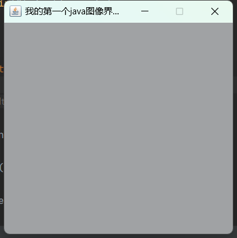
问题：发现窗口关闭不掉，停止Java程序
1 | import java.awt.*; |
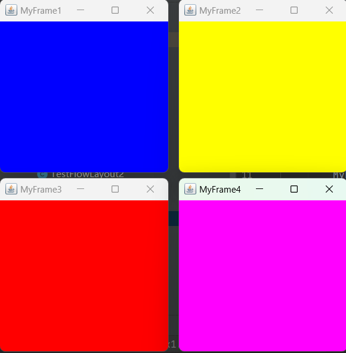
2.2.2 Panel
1 | import java.awt.*; |
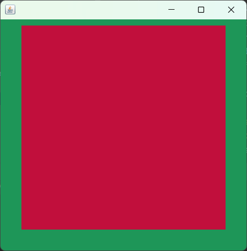
注意：label、button、… … —》 panel –》window(frame)
2.3 布局管理器（LayoutManager 类族）
2.3.1 流式布局 FlowLayout
1 | import java.awt.*; |
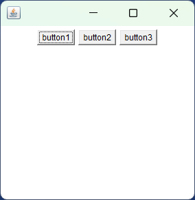
2.3.2 东西南北中 BorderLayout
1 | import java.awt.*; |

2.3.3 表格布局 GridLayout
1 | import java.awt.*; |
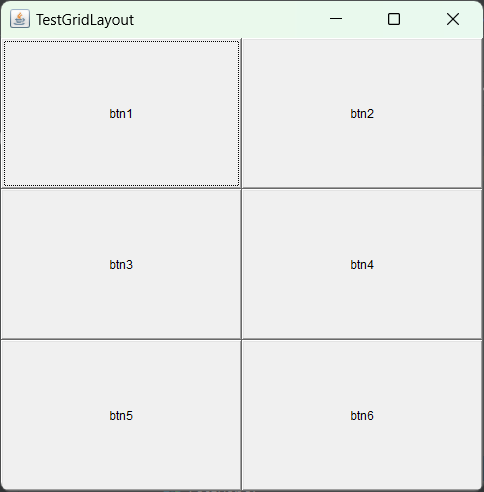
2.3.4 练习
1 | import java.awt.*; |
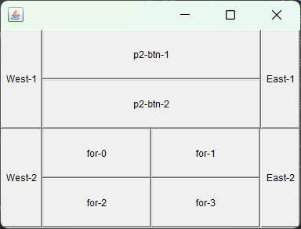
小结
- Frame是一个顶级窗口
- Panel无法单独显示，必须添加到某个容器中
- 布局管理（流式布局、东西南北中、表格）
- 大小、定位、背景颜色、可见性、监听关闭
2.4 事件监听 ActionListener
2.4.1 事件监听
1 | import java.awt.*; |
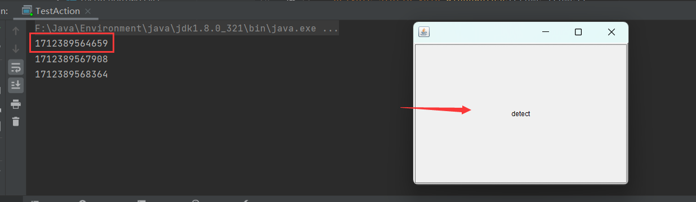
2.4.2 多个按钮共享一个事件
1 | import java.awt.*; |
2.5 输入框TextField监听
1 | import java.awt.*; |
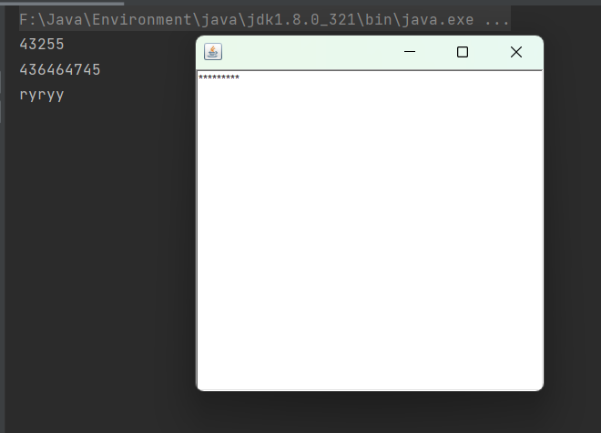
2.6 简易计算器
组合
1 | class A extends B{ |
计算器：组合
1 | import java.awt.*; |
计算器：内部类
1 | import java.awt.*; |
2.7 画笔 Graphics
1 | import java.awt.*; |
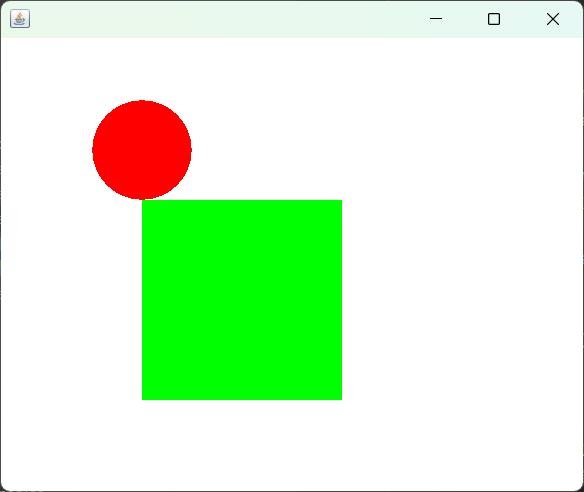
2.8 鼠标监听
1 | import java.awt.*; |
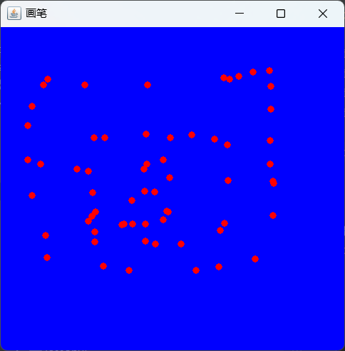
2.9 窗口监听
1 | import java.awt.*; |
1 | import java.awt.*; |
2.10 键盘监听
1 | import java.awt.*; |
3.Swing
3.1 窗口 JFrame
1 | import javax.swing.*; |
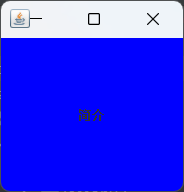
3.2 弹窗 JDialog
1 | import javax.swing.*; |
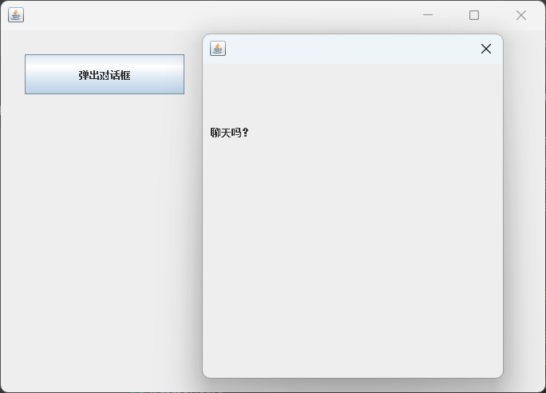
3.3 标签
1.标签 JLable
1 | new JLabel("开始", iconDemo, SwingConstants.CENTER); |
2.图标 Icon
1 | import javax.swing.*; |
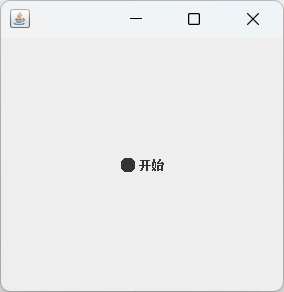
3.图片 ImageIcon
1 | import javax.swing.*; |
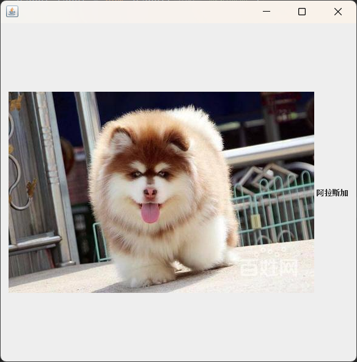
3.4 面板JPanel
1.JPanel
1 | import javax.swing.*; |
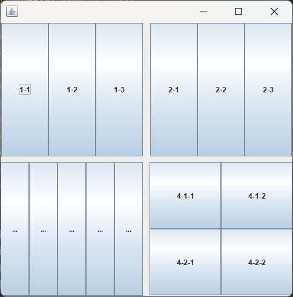
2.JScrollPanel
1 | import javax.swing.*; |
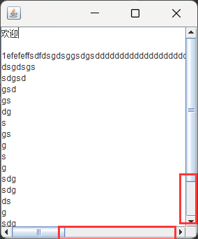
3.5 按钮
1.普通按钮 JButton
1 | import javax.swing.*; |
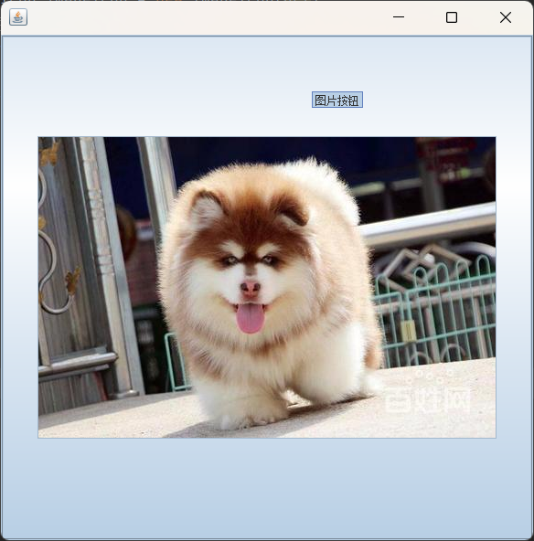
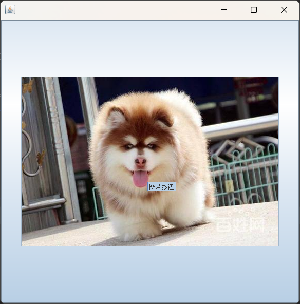
2.单选按钮 JRadioButton
1 | import javax.swing.*; |
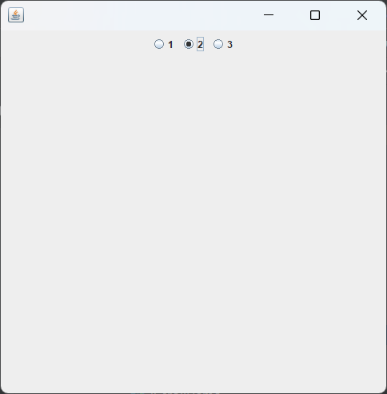
3.复选按钮 JCheckBox
1 | import javax.swing.*; |
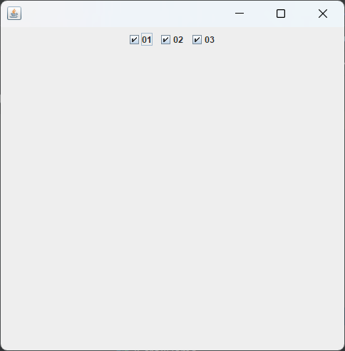
3.6 列表
1.下拉框 JComboBox
1 | import javax.swing.*; |
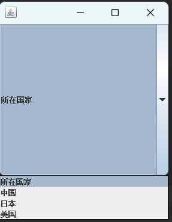
2.列表框 JList
1 | import javax.swing.*; |
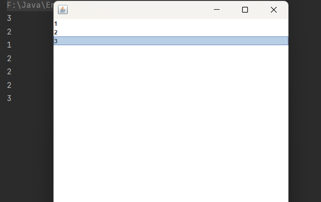
3.7 文本框
1.文本框 JTextField
1 | import javax.swing.*; |
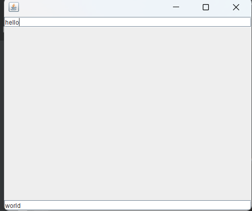
2.密码框 JPasswordField
1 | import javax.swing.*; |
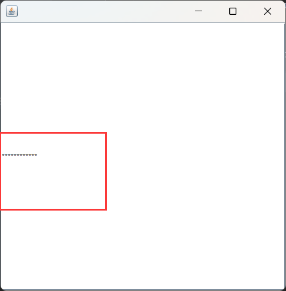
3.文本域 JTextArea
1 | import javax.swing.*; |
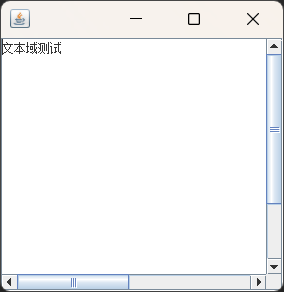
4.AWT和Swing
4.1 核心架构
| 特性 | AWT | Swing |
|---|---|---|
| 实现方式 | 基于本地 GUI 组件（如 Windows 的 Win32） | 纯 Java 实现，无本地依赖 |
| 跨平台外观 | 外观依赖操作系统（“一次编写，到处运行”） | 统一外观（默认 Metal LookAndFeel） |
| 性能 | 高性能（直接调用本地 API） | 较低（纯 Java 绘制，但 JVM 优化后差距缩小） |
| 线程安全 | 无强制要求，但需注意线程问题 | 强制要求 GUI 操作在事件调度线程（EDT）中执行 |
4.2 组件体系
| 特性 | AWT | Swing |
|---|---|---|
| 基础组件 | Button, Label, TextField, Frame |
JButton, JLabel, JTextField, JFrame |
| 高级组件 | 有限（如 FileDialog） |
丰富（如 JTable, JTree, JComboBox） |
| 组件继承 | 继承自 java.awt.Component |
继承自 javax.swing.JComponent |
| 布局管理 | 基础布局（FlowLayout, BorderLayout） |
强大布局（GridBagLayout, SpringLayout） |
4.3 外观与风格
- AWT：
- 使用本地操作系统的外观（如 Windows 的 Luna 风格按钮、macOS 的 Aqua 风格）
- 不同平台间 UI 可能存在不一致性
- Swing：
- 默认 Metal LookAndFeel（跨平台统一外观）
- 支持切换多种LookAndFeel（如 Nimbus、Windows、GTK），甚至自定义主题
4.4 事件处理
AWT：
基于
java.awt.event包，需实现监听接口（如ActionListener）示例代码：
1
2
3button.addActionListener(new ActionListener() {
public void actionPerformed(ActionEvent e) { ... }
});
Swing：
基于
java.awt.event包，但支持更简洁的 lambda 表达式（Java 8+）示例代码：
1
button.addActionListener(e -> System.out.println("Clicked!"));
4.5 线程模型
- AWT：
- 没有强制线程规则，但非 EDT 中的操作可能导致竞态条件
- Swing：
- 严格强制 GUI 更新在 EDT 中执行，违反时会抛出
ThreadMismatchException - 推荐使用
SwingUtilities.invokeLater()或SwingWorker处理后台任务
- 严格强制 GUI 更新在 EDT 中执行，违反时会抛出
4.6 扩展性与灵活性
- Swing：
- 支持自定义组件、渲染器（如
TableCellRenderer）、模型驱动架构（MVC） - 提供丰富的工具类（如
JOptionPane、JFileChooser）
- 支持自定义组件、渲染器（如
- AWT：
- 更接近底层，适合需要直接控制原生窗口的场景（如游戏、嵌入式开发）
4.7 资源消耗
- AWT：
- 轻量级，资源占用低（依赖本地库）
- Swing：
- 重量级，组件对象多，内存占用较高（但现代 JVM 已优化）
4.8 应用场景
- 选择 AWT：
- 需要高性能或底层 GUI 控制（如游戏、实时系统）
- 维护遗留代码或特定平台适配
- 选择 Swing：
- 跨平台且需丰富 UI 功能的中型应用（如 IDE、数据分析工具）
- 不追求最新技术栈的项目（JavaFX 已逐渐替代 Swing）